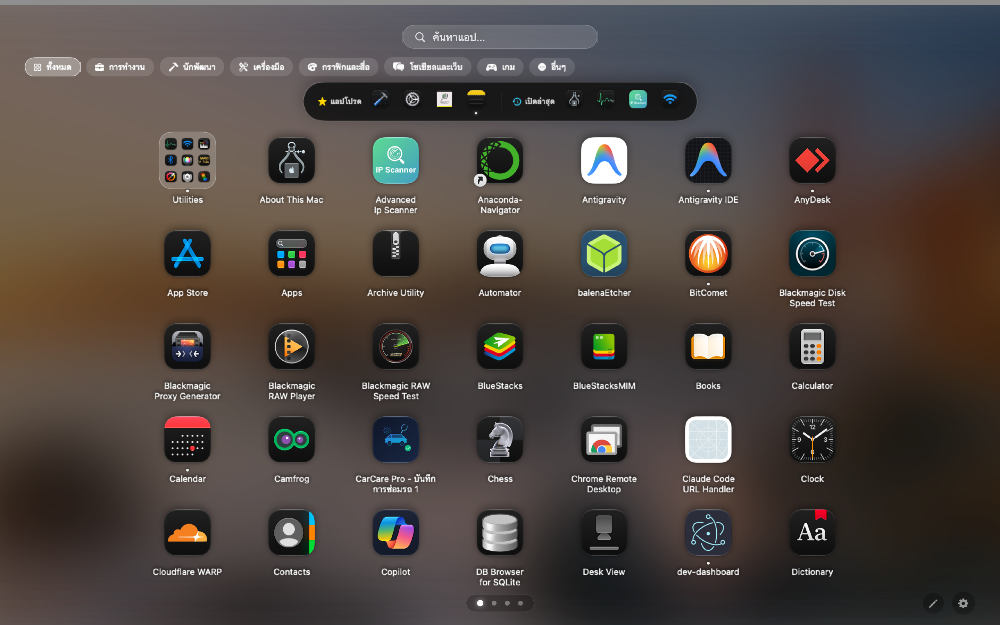

A native 120Hz ProMotion Launchpad for modern macOS, recreating Apple's authentic feel.
Features real-time Frosted Glass from your desktop wallpaper, fast bilingual search, and full folder organization.

Key Features
Engineered from the ground up for instantaneous responsiveness, perfectly in tune with macOS.
Buttery-smooth 120Hz scrolling on MacBook Pro & Studio Display, paired with an intelligent Gesture Lock that prevents momentum over-scrolling across multiple pages.
Extracts your active desktop wallpaper and renders hardware-accelerated Gaussian Blur with GPU caching (.drawingGroup()) for an authentic translucent glass effect with low battery consumption.
Precision Apple spacing calculations that dynamically adapt to MacBook notched displays, iMacs, and external 4K/5K ultra-wide monitors.
Start typing immediately when Launchpad opens without clicking the search field. Supports Thai, original English .app filenames, and quick acronyms (e.g. "vsc" for VS Code).
Drag an app onto another to create a folder, reorder within folders, drag out to remove, or use 1-click "Ungroup Folder" to return all apps to the main grid.
A frosted glass top bar for starred favorites and recently opened apps. Features active running dots under open apps and a quick right-click "Quit App" action.
Screenshots
Click each tab to preview high-resolution views of the application.
Controls & Shortcuts
Full support for mouse, trackpad gestures, and keyboard navigation.
Installation
No complicated configuration required. Just drag and start launching.
Download Launchpad.zip from this page and double-click to unarchive. You will get Launchpad.app.
Drag Launchpad.app into your Mac's /Applications directory for system-wide access.
Drag the icon from Applications onto your Dock to launch it with one click just like original Launchpad.
Because this app is distributed outside the Mac App Store, if macOS shows an "unidentified developer" prompt on first launch, right-click the app and choose Open, or run the Terminal command below:
Support Developer
Launchpad is completely free and open-source, crafted for Mac users who love the classic, blazing-fast Launchpad experience.
If you find this app helpful, consider supporting development via Thai PromptPay. Any support helps maintain future updates and new features!